So, we see now that, using the factorization trick, we have two
ensembles to average over:
| 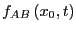 | 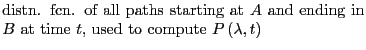 | (302) | |
| 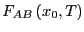 | 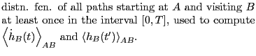 | (303) |
We can compute averages in these two ensembles by MC sampling. A new
path is generated from an old path, and is accepted or rejected based
on a detailed balance criterion. Now, we sample these two path ensembles
in two different simulations, but the acceptance rules and trial moves
are the same. Let's generall call
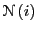 the
probability of path  . We start with an old path ``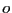'' and attempt
to generate a new path ``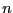''. The acceptance rule obeying detailed
balance is
. We start with an old path ``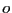'' and attempt
to generate a new path ``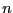''. The acceptance rule obeying detailed
balance is
| 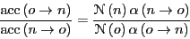 | (304) |
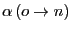 is the a priori probabilit of attemptying to generate . The moves used in transition path sampling MC guarantee 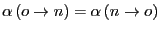. So,
| 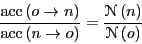 | (305) |
So, what are the moves? There are two basic moves we can consider here.
It seems the real trick is generating an initial path of length
 that successfully connects region
that successfully connects region  with region
with region  . This can
be done with traditional MD by beginning a trajectory in state
. This can
be done with traditional MD by beginning a trajectory in state  and
simply waiting long enough for it to cross into
and
simply waiting long enough for it to cross into  . This might be
possible, but could easily be prohibitively expensive. A better
technique is to guess a path by creating a configuration which you
hypothesize to be a transition state, and then integrating
forward and backward in time to generate a path. It is accepted as an
initial path if the beginning lands in
. This might be
possible, but could easily be prohibitively expensive. A better
technique is to guess a path by creating a configuration which you
hypothesize to be a transition state, and then integrating
forward and backward in time to generate a path. It is accepted as an
initial path if the beginning lands in  and the end in
and the end in  .
.